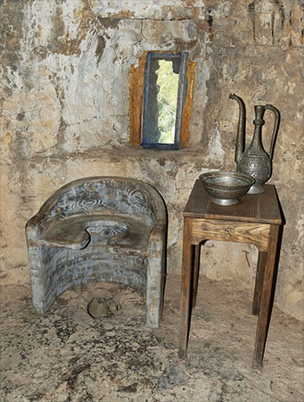
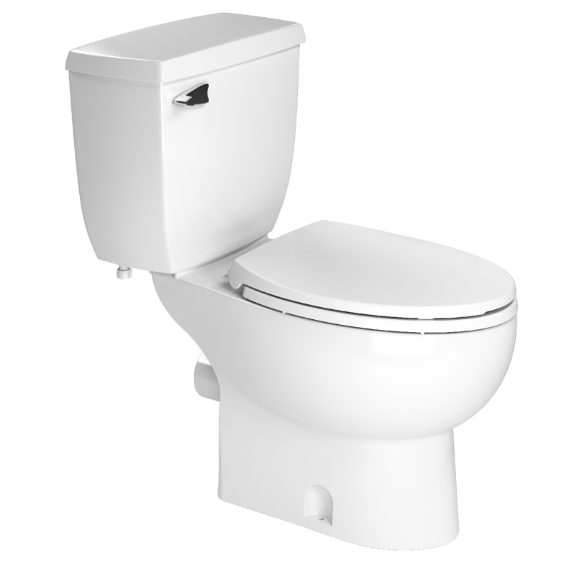

Historia de los Inodoros
Historia
El inodoro moderno fue inventado por Alexander Cummings en 1775. Su diseño incluía un sifón en forma de "S" que evitaba que los olores regresaran al baño.
En 1849, Thomas Twyford fabricó los primeros inodoros de cerámica, y en la década de 1880, Thomas Crapper mejoró el diseño con la invención del flotante.
Se denomina inodoro, retrete, escusado,[a] váter, taza del baño, sanitario, bacinete, bacín, poceta, o wáter, al aparato sanitario utilizado para recoger y evacuar los excrementos sólidos y líquidos de los humanos hacia una instalación de saneamiento y que impide, mediante un sistema de sifón de agua limpia, la salida de los olores desagradables de la cloaca o alcantarillado hacia los espacios habitados. Inodoro quiere decir que no huele.
Edad Antigua
Los antecedentes más antiguos se encuentran en Mesopotamia y datan del cuarto milenio a. C. cuando se inventaron las tuberías de arcilla, las alcantarillas y los retretes. En la ciudad de Uruk se encontró el primer retrete de fosa interna datado en 3.200 a. C.[7] En el poblado neolítico de Skara Brae, en Escocia, se encontraron pequeños habitáculos internos con un desagüe común hacia el 3.000 a. C.[8] Fue la civilización del valle del Indo, en el noroeste de la India y Pakistán la que albergó los primeros sistemas de saneamiento urbano conocidos en el mundo. En Mohenjo-Daro (2800 a. C.), se construyeron retretes en los muros exteriores de las casas, que tenían conductos verticales por los que se evacuaban los residuos a pozos negros o alcantarillas.[9]En la ciudad india de Lothal (2350 a. C.), las casas de la clase alta disponían de retretes privados conectados a una red de alcantarillado cubierta construida con ladrillos unidos con un mortero a base de yeso, que se vertía a las masas de agua próximas o en pozos negros, que se vaciaban y limpiaban periódicamente.[10]
Edad Media
Sri Lanka, las técnicas de construcción de retretes y lavabos se desarrollaron a lo largo de varias etapas. En el complejo de Abhayagiri, en Anuradhapura, se conocen retretes y baños que datan de los siglos II a. C. al III d. C. En Polonnaruwa y Anuradhapura, los retretes del siglo V d. C. al X tenían elaborados motivos decorativostallados alrededor. Se desarrollaron varios tipos de retretes; entre ellos, lavabos con pozos anulares, tuberías subterráneas de terracota que conducían a fosas sépticas, fosas urinarias con grandes vasijas de barro sin fondo de tamaño decreciente colocadas una encima de otra. Estas vasijas bajo los urinarios contenían "arena, cal y carbón" a través de los cuales la orina se filtraba hasta la tierra en un proceso de depuración.
inodoro actual
el siglo XX el inodoro se convirtió en un producto mucho más funcional y necesario para todo el mundo, y aunque ha mantenido su estructura y diseño general, actualmente existen cientos de opciones y en eso los japoneses se han convertido en verdaderos maestros con el desarrollo de inodoros electrónicos, repletos de funciones que van mucho más allá de integrar una cisterna y que los convierten en elementos de alta tecnología, por supuesto pueden llegar a costar miles de dólares.
- Calefacción
- Chorros de agua templada: con temperatura y presión ajustables en ocasiones.
- Secado con aire templado
- Sistema de eliminación de olores: con un ventilador y un conversor catalítico.
- Nebulizador automático: se activa con el acercamiento del usuario.
- Control remoto para spray y otras funciones
- Limpieza automática
- Solución antibacteriana
- Función de enema
- Luz LED nocturna
- Lavado masculino/femenino
- Opciones para niños
- Ahorro de energía
Sin embargo, a pesar de todos estos avances, 4.200 millones de personas aún no cuentan instalaciones de saneamiento básicas y 673 millones aún excretan al aire libre, en el campo, ríos, orillas o alcantarillas. Por eso el Día Mundial del Retrete, que se celebra cada 19 de noviembre, busca crear conciencia acerca de la crisis mundial de saneamiento y fomentar medidas que la resuelvan.
Imágenes
 
Costos
Inodoro Básico
Precio: $100
Inodoro de Lujo
Precio: $500
Inodoro Inteligente
Precio: $12.500